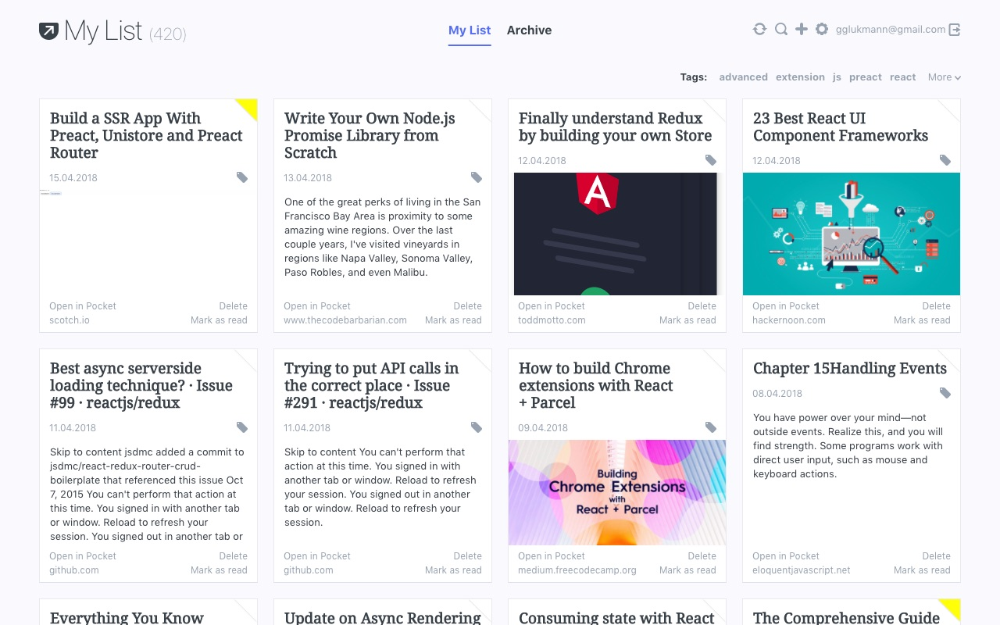

Unofficial Pocket new tab extension for Chrome and Firefox, and Edge
Get your Pocket list and archive right on your browsers new tab.
You can mark your items as read, delete them or add to the favorites list. You can find your items faster with searching over titles and URLs and if you don't have Pocket original extension installed, you can add new links too.
IT'S FREE
 Add to Chrome
Add to Chrome  Add to Firefox
Add to Firefox  Add to Edge
Add to Edge